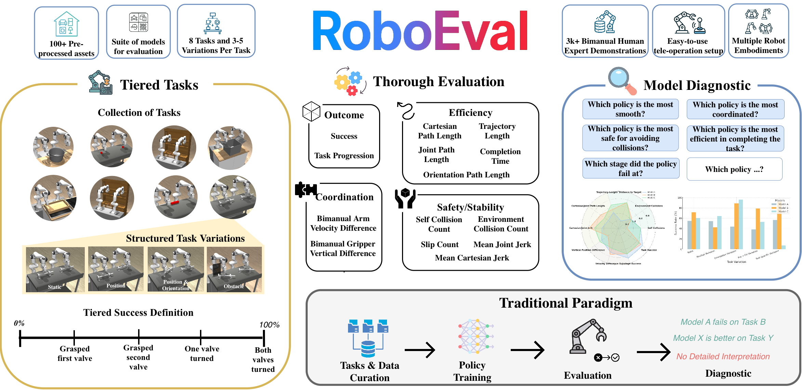
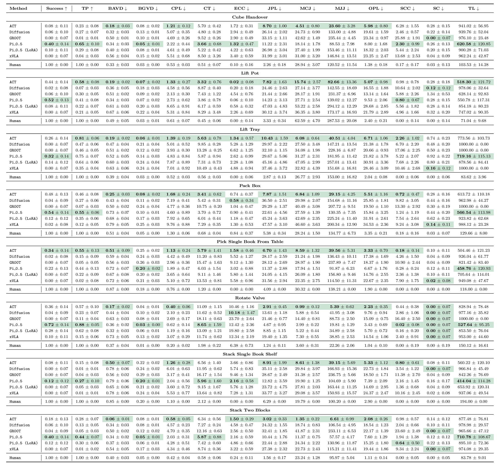

Benchmark
Task Overview
(a) Lift Pot
(b) Lift Tray
(c) Lift Bar
(d) Pack Box
(e) Stack Two Cubes
(f) Stack Single Book Shelf
(g) Pick Book From Table
(h) Rotate Valve
RoboEval Benchmark
RoboEval is a benchmark for evaluating bimanual manipulation policies under diverse task settings. The first iteration consists of 10 base tasks and 3000+ human demonstrations. The tasks are derived from common tasks that humans perform in diverse settings, from service style tasks such as lifting a tray, to warehouse tasks like closing a box, to industrial tasks like rotating hand-wheels. Each task includes multiple variations—ranging from static setups to dynamic shifts in object pose and semantic context—designed to assess policy performance in a systematic manner. To facilitate research in imitation learning and demo-driven policy training, we provide a suite of raw expert human demonstrations, along with fine-grained evaluation metrics such as trajectory smoothness, environment collisions, etc.

Base Task Set in RobotArena
| Task Name | Variations | # Demos | Traj Len | Skills | Coordination Type |
|---|---|---|---|---|---|
| Lift Tray | Static, Pos, Rot, PR | 543 | 67.584 | grasp, lift | Tight Sym. |
| Stack Two Cubes | Static, Pos, Rot, PR | 492 | 107.047 | grasp, hold, place | Loosely Coord. |
| Stack Single Book Shelf | Static, Pos, PR | 202 | 172.302 | push, grasp, lift, place | Loosely Coord. |
| Rod Handover | Static, Pos, Rot, PR | 408 | 93.529 | grasp, hold | Loosely Coord. |
| Lift Pot | Static, Pos, Rot, PR | 176 | 53.170 | grasp, lift | Tight Sym. |
| Pack Box | Static, Pos, Rot, PR | 394 | 133.216 | push | Uncoord. |
| Pick Book From Table | Static, Pos, Rot, PR | 366 | 105.984 | grasp, lift | Loosely Coord. |
| Rotate Valve | Static, Pos, PR | 349 | 119.610 | grasp, rotate along axis | Uncoord. |
Evaluation Metrics
We evaluate policy performance across outcome, efficiency, bimanual coordination, and safety/stability.
Outcome
- Success: Whether the task reaches its goal (binary or graded).
- Task Progression: How far execution advances through staged sub-goals.
Efficiency
- Cartesian Path Length: 3D distance traveled by the end-effectors.
- Trajectory Length: Integrated path length along the executed motion.
- Joint Path Length: Total angular distance moved across joints.
- Completion Time: Time or timesteps until the episode ends.
- Orientation Path Length: Integrated rotation change of the object or tools.
Coordination
- Bimanual Arm Velocity Difference: Mismatch in speed between the two arms.
- Bimanual Gripper Vertical Difference: Height offset between the two grippers.
Safety/Stability
- Self Collision Count: Contacts between the robot’s own links.
- Environment Collision Count: Contacts between robot and scene geometry.
- Slip Count: Unintended slips or drops of the manipulated object.
- Mean Joint Jerk: Average smoothness of joint motion (rate of acceleration change).
- Mean Cartesian Jerk: Average smoothness of end-effector motion in 3D.
Simulation Results
Task rollouts
Select a task, variation, and method to view a collage of episode rollouts. Each tile is an independent evaluation episode: a green border marks a successful episode and a red border marks a failure.
Task
variation
method
Performance on Bimanual Tasks with Variations

Leaderboard
Sort models by any metric. Default sorting follows the best direction for each metric (higher for upward-arrow metrics, lower for downward-arrow metrics).
Failure Analysis & Metric Summary
This section provides a per-task summary with failure mode heatmaps first, then metric performance graphs below, so you can review failure patterns and compare methods.